Code
library(tidyverse)
library(caret)
library(janitor)
load("datos.Rdata")
head(datos)Parte I: análisis exploratorio
El objetivo final de este trabajo es construir un modelo que prediga si un pasajero queda satisfecho con una aerolínea (no especificada) a partir de sus características (género, edad, tipo de cliente, motivo y clase del viaje, distancia y retrasos) y de su valoración de 14 servicios, a bordo y en tierra.
Este documento recoge la primera fase, de carácter exploratorio.
Los datos proceden de la plataforma Kaggle (Customer Satisfaction, John D.). La descripción indica que se trata de una encuesta de satisfacción a pasajeros de una aerolínea que no se especifica; no se detalla cómo se recogieron los datos ni en qué periodo. Por ello, no podemos verificar de forma independiente su procedencia y lo tenemos en cuenta como limitación.
Cada observación es la respuesta de un pasajero a la encuesta sobre un vuelo concreto. El conjunto contiene 129.880 observaciones y 24 variables (23 tras eliminar el identificador, ver 3.1).
Variable respuesta
satisfaction_v2: satisfacción global del pasajero, con dos categorías: satisfied y neutral or dissatisfied.Perfil del pasajero y del viaje
id: identificador de la encuesta.Gender: género (Female, Male).Customer Type: tipo de cliente (Loyal Customer, disloyal Customer).Age: edad en años.Type of Travel: motivo del viaje (Business travel, Personal Travel).Class: clase de cabina (Business, Eco, Eco Plus).Flight Distance: distancia del vuelo (la documentación no indica la unidad).Operativa del vuelo
Departure Delay in Minutes: retraso en la salida, en minutos.Arrival Delay in Minutes: retraso en la llegada, en minutos.Valoraciones del servicio (14 variables)
Escala ordinal de 1 (mínima satisfacción) a 5 (máxima). Algunas variables también contienen el valor 0, cuyo significado no se explica en la documentación (ver apartado 6.1.2.).
Seat comfort: comodidad del asiento.Departure/Arrival time convenient: conveniencia del horario de salida y llegada.Food and drink: comida y bebida.Gate location: ubicación de la puerta de embarque.Inflight wifi service: wifi a bordo.Inflight entertainment: entretenimiento a bordo.Online support: soporte en línea.Ease of Online booking: facilidad de reserva en línea.On-board service: servicio a bordo.Leg room service: espacio para las piernas.Baggage handling: el proceso de recogida, transporte, clasificación y entrega del equipaje de los pasajeros.Checkin service: servicio de registro.Cleanliness: limpieza.Online boarding: embarque en línea.Antes de empezar con la exploración de los datos, veamos la estructura interna del archivo, los nombres de las variables y de qué tipo es inicialmente cada una.
library(tidyverse)
library(caret)
library(janitor)
load("datos.Rdata")
head(datos)La dimensión del conjunto de datos original es la siguiente, indicando el número total de observaciones (filas) y de variables (columnas):
dim(datos)[1] 129880 24Viendo los nombres de las variables, decidimos estandarizarlos, poniéndolos en minúsculas y con guiones bajos, todos con el mismo formato.
# Convertimos a tibble y estandarizamos nombres a minúsculas y guiones bajos
datos <- as_tibble(datos) %>%
clean_names()Además, convertimos las 5 variables categóricas a tipo factor, para que R almacene los distintos tipos. Por ejemplo, la variable género tendrá dos factores: “Male” y “Female”.
cols_categoricas <- c(
"gender",
"customer_type",
"type_of_travel",
"class",
"satisfaction_v2"
)
datos <- datos %>%
mutate(across(all_of(cols_categoricas), as.factor))Durante la inspección inicial se identifica la variable id. Dado que se trata únicamente de un identificador para cada encuesta, realmente no aporta ningún tipo de información relevante para el estudio, por lo que decidimos eliminarla.
datos <- datos %>%
select(-id)Dado el gran volumen de observaciones (129.880 registros), optamos por quedarnos con una muestra estratificada representativa para el modelado y exploración (el train):
Test y validación no se emplean en este análisis exploratorio.
library(caret)
set.seed(6004)
# 10% para el conjunto de entrenamiento
idx_train <- createDataPartition(datos$satisfaction_v2, p = 0.1, list = FALSE)
train <- datos[idx_train, ]
test_valid <- datos[-idx_train, ]
# 15% del resto para el conjunto de prueba
idx_test <- createDataPartition(test_valid$satisfaction_v2, p = 0.15, list = FALSE)
test <- test_valid[idx_test, ]
valid <- test_valid[-idx_test, ]Por tanto, la dimensión de train es
dim(train)[1] 12989 23la de test
dim(test)[1] 17534 23y la de valid
dim(valid)[1] 99357 23A partir de ahora trabajamos únicamente con train. Sobre train haremos todo el análisis exploratorio de datos.
El objetivo de este análisis de datos es examinar la estructura de las variables, evaluar la calidad de los datos y detectar patrones relevantes en el comportamiento de los pasajeros antes de abordar tareas de modelado predictivo.
Para ello, sobre la muestra de entrenamiento (train) se abordarán las siguientes fases:
NA) y decisión de cómo se tratará con él.flight_distance, departure_delay_in_minutes y arrival_delay_in_minutes).satisfaction_v2).age, gender) y de los vuelos (class, type_of_travel, customer_type).Para guiar la exploración de los datos y contrastar hipótesis concretas sobre el comportamiento de los clientes, se formulan las siguientes preguntas de partida:
seat_comfort, cleanliness)?type_of_travel: negocios vs. personal) y la cabina (class: Business vs. Eco)?inflight_wifi_service, online_boarding, online_support) tienen una relación más estrecha con la lealtad del cliente (customer_type)?Comprobamos si existen observaciones incompletas y en qué variables se concentran:
# Conteo y porcentaje de NAs por columna
na_resumen <- train %>%
summarise(across(everything(), ~ sum(is.na(.)))) %>%
pivot_longer(everything(), names_to = "variable", values_to = "n_nas") %>%
filter(n_nas > 0) %>%
mutate(porcentaje = (n_nas / nrow(train)) * 100)
na_resumenLos valores ausentes se concentran únicamente en arrival_delay_in_minutes (41 observaciones, 0.32 % de train). Decidimos no tocar esas filas porque, como veremos en 6.1.3.1., esta variable es casi idéntica a departure_delay_in_minutes , que no tiene ausentes, así que de cara al modelado prescindiremos de ella. En el análisis exploratorio se calculan los estadísticos con las observaciones disponibles.
Las variables de encuesta van teóricamente del 1 al 5; revisamos la frecuencia del valor 0, cuyo significado no está documentado. Lo que pensamos es que puede indicar “servicio no contratado o no aplicable”; comprobamos si los datos la respaldan:
library(knitr)
# Lista única de los 14 servicios
servicios <- names(train)[match("seat_comfort", names(train)):match("online_boarding", names(train))]ceros_resumen <- train %>%
summarise(across(all_of(servicios), ~ round(mean(. == 0) * 100, 1))) %>%
pivot_longer(everything(), names_to = "servicio", values_to = "pct_ceros") %>%
arrange(desc(pct_ceros))
kable(ceros_resumen, caption = "Porcentaje de valoraciones iguales a 0 por servicio")| servicio | pct_ceros |
|---|---|
| departure_arrival_time_convenient | 5.1 |
| food_and_drink | 4.5 |
| seat_comfort | 3.7 |
| inflight_entertainment | 2.2 |
| leg_room_service | 0.3 |
| inflight_wifi_service | 0.1 |
| gate_location | 0.0 |
| online_support | 0.0 |
| ease_of_online_booking | 0.0 |
| on_board_service | 0.0 |
| baggage_handling | 0.0 |
| checkin_service | 0.0 |
| cleanliness | 0.0 |
| online_boarding | 0.0 |
ceros_vs_sat <- train %>%
select(satisfaction_v2, all_of(servicios)) %>%
pivot_longer(-satisfaction_v2, names_to = "servicio", values_to = "valor") %>%
group_by(servicio) %>%
summarise(
n_ceros = sum(valor == 0),
pct_sat_cero = ifelse(n_ceros > 0,
mean(satisfaction_v2[valor == 0] == "satisfied") * 100, NA),
pct_sat_1a5 = mean(satisfaction_v2[valor > 0] == "satisfied") * 100,
.groups = "drop"
) %>%
arrange(desc(n_ceros))
kable(ceros_vs_sat, digits = 1,
caption = "% de satisfechos con valor 0 vs. valor 1-5 (n_ceros = nº de pasajeros con 0)")| servicio | n_ceros | pct_sat_cero | pct_sat_1a5 |
|---|---|---|---|
| departure_arrival_time_convenient | 662 | 54.1 | 54.8 |
| food_and_drink | 579 | 80.3 | 53.5 |
| seat_comfort | 476 | 99.6 | 53.0 |
| inflight_entertainment | 287 | 71.1 | 54.4 |
| leg_room_service | 39 | 74.4 | 54.7 |
| inflight_wifi_service | 10 | 20.0 | 54.8 |
| ease_of_online_booking | 3 | 0.0 | 54.7 |
| online_boarding | 2 | 0.0 | 54.7 |
| cleanliness | 1 | 0.0 | 54.7 |
| on_board_service | 1 | 0.0 | 54.7 |
| baggage_handling | 0 | NA | 54.7 |
| checkin_service | 0 | NA | 54.7 |
| gate_location | 0 | NA | 54.7 |
| online_support | 0 | NA | 54.7 |
train <- train %>%
mutate(n_ceros = rowSums(select(., all_of(servicios)) == 0))
train %>%
group_by(type_of_travel, class) %>%
summarise(n = n(),
pct_con_algun_cero = round(mean(n_ceros > 0) * 100, 1),
media_ceros = round(mean(n_ceros), 2),
pct_satisfechos = round(mean(satisfaction_v2 == "satisfied") * 100, 1),
.groups = "drop") %>%
kable(caption = "Ceros y satisfacción por tipo de viaje y clase")| type_of_travel | class | n | pct_con_algun_cero | media_ceros | pct_satisfechos |
|---|---|---|---|---|---|
| Business travel | Business | 5909 | 6.3 | 0.14 | 72.2 |
| Business travel | Eco | 2489 | 11.6 | 0.18 | 30.4 |
| Business travel | Eco Plus | 521 | 6.3 | 0.20 | 39.3 |
| Personal Travel | Business | 267 | 9.0 | 0.21 | 47.6 |
| Personal Travel | Eco | 3339 | 7.2 | 0.16 | 45.5 |
| Personal Travel | Eco Plus | 464 | 9.1 | 0.21 | 50.6 |
Por tanto, de los 14 servicios, cuatro concentran los ceros (departure_arrival_time_convenient 5,1%, food_and_drink 4,5%, seat_comfort 3,7%, inflight_entertainment 2,2%); en el resto son prácticamente inexistentes.
Estos ceros no son neutros: el 99,6% de quienes puntúan 0 en comodidad del asiento está satisfecho (frente al 53% del resto), y valores similares aparecen en comida (80%) y entretenimiento (71%).
Además, no se concentran en ningún tipo de viaje ni clase concretos. Esto contradice nuestra hipótesis inicial. Como el lugar de procedencia de los datos no explica qué significa el 0 y un asiento “no aplicable” no tiene sentido ninguno, lo interpretamos como una posible característica del proceso de recogida o generación de los datos.
Decisiones:
Vamos a analizar departure_delay_in_minutes, arrival_delay_in_minutes y flight_distance, para ver cómo se distribuyen, si hay valores extremos y si es necesario descartar alguna de estas variables.
Para la distancia de vuelo hemos considerado que se vería bien con un histograma y, para los retrasos, mejor con uno de caja. Veamos primero los estadísticos descriptivos.
library(knitr)
resumen_stats <- train %>%
select(flight_distance, departure_delay_in_minutes, arrival_delay_in_minutes) %>%
summary()
kable(resumen_stats, caption = "Estadísticos descriptivos de las variables cuantitativas de vuelo")| flight_distance | departure_delay_in_minutes | arrival_delay_in_minutes | |
|---|---|---|---|
| Min. : 51 | Min. : 0.00 | Min. : 0.00 | |
| 1st Qu.:1360 | 1st Qu.: 0.00 | 1st Qu.: 0.00 | |
| Median :1929 | Median : 0.00 | Median : 0.00 | |
| Mean :1985 | Mean : 14.67 | Mean : 15.16 | |
| 3rd Qu.:2552 | 3rd Qu.: 12.00 | 3rd Qu.: 13.00 | |
| Max. :6598 | Max. :933.00 | Max. :920.00 | |
| NA | NA | NAs :41 |
Observando la tabla anterior, vemos que las columnas dos y tres son muy parecidas. Y es que, habitualmente, si un avión se retrasa en su salida, lo más natural es que tambien se retrase en su llegada. Para contrastar esta hipótesis, recurrimos a dos de las herramientas vistas en la asignatura: el diagrama de dispersión (scatter plot) y el coeficiente de correlación lineal de Pearson. Esta relación también es relevante para el tratamiento de los valores ausentes de arrival_delay_in_minutes vistos en el 6.1.1..
# Cálculo del coeficiente de Pearson (omitiendo los 41 NAs de llegada)
cor_retrasos <- cor(
train$departure_delay_in_minutes,
train$arrival_delay_in_minutes,
use = "complete.obs"
)
# Diagrama de dispersión con recta de identidad y = x
ggplot(train, aes(x = departure_delay_in_minutes, y = arrival_delay_in_minutes)) +
geom_point(alpha = 0.3, color = "#2c3e50") +
geom_abline(intercept = 0, slope = 1, color = "red", linetype = "dashed", linewidth = 1) +
theme_minimal() +
labs(
title = paste0("Retraso en Salida vs. Retraso en Llegada (r = ", round(cor_retrasos, 3), ")"),
subtitle = "La línea discontinua roja representa la recta de identidad (y = x)",
x = "Minutos de retraso en la salida",
y = "Minutos de retraso en la llegada"
)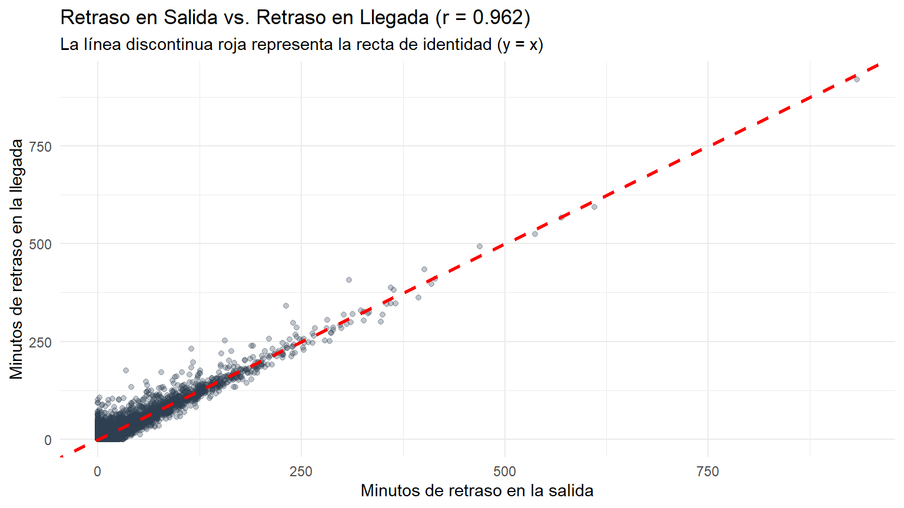
Tal y como se observa en el gráfico, los puntos se concentran de manera casi perfecta a lo largo de la recta de identidad (línea roja discontinua), lo que indica que el tiempo de retraso acumulado en el despegue se reproduce casi idénticamente al aterrizar. Esto queda corroborado cuantitativamente por el coeficiente de correlación de Pearson, cuyo valor (\(r = 0.962\)) se encuentra sumamente próximo a \(+1\). En consecuencia, ambas aportan información redundante, por lo que de cara al modelado predictivo bastará con mantener únicamente una de ellas para prevenir problemas de multicolinealidad. Conservamos departure_delay_in_minutes (sin ausentes) y descartamos arrival_delay_in_minutes, lo que resuelve a la vez la redundancia y los NAs.
train <- train %>% select(-arrival_delay_in_minutes)Una vez solucionado esto, retomamos los gráficos de flight_distance y departure_delay_in_minutes.
# Histograma de distancia de vuelo
ggplot(train, aes(x = flight_distance)) +
geom_histogram(bins = 30, fill = "steelblue", color = "white") +
theme_minimal() +
labs(
title = "Distribución de la Distancia de Vuelo",
x = "Distancia",
y = "Frecuencia"
)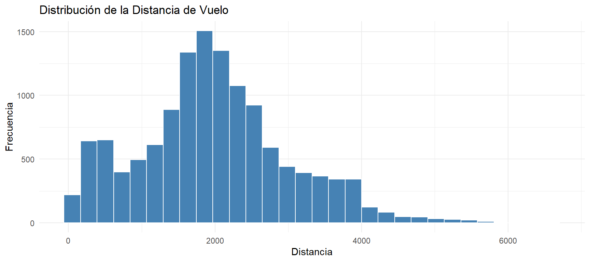
# Diagrama de caja para los retrasos (detección de outliers y asimetría a la derecha)
ggplot(train, aes(y = departure_delay_in_minutes)) +
geom_boxplot(fill = "pink", outlier.color = "purple", alpha = 0.6) +
theme_minimal() +
labs(
title = "Diagrama de Caja: Retraso en la Salida (minutos)",
y = "Minutos de retraso"
)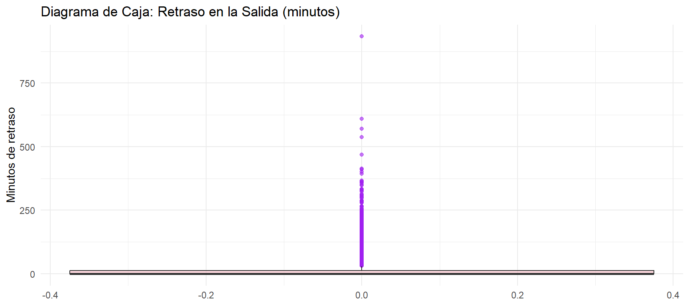
De esta tabla y gráfica extraemos las siguientes conlusiones:
flight_distance): Hay una asimetría a la derecha, viendo cómo hay menos vuelos por esa zona, cosa que tiene sentido porque los vuelos de tanta distancia (internacionales) son menos frecuentes. La masa predominante de vuelos está entre las 1500 y 2500 millas, siendo el pico más alto (mayor parte de los vuelos) 6598 millas, como se vio en la tabla.departure_delay_in_minutes): Más de la mitad de los vuelos salen puntuales, ya vimos que el mínimo, la mediana y el primer cuartil valían 0. Es por eso por lo que sale la caja aplastada en el 0. Luego se ven puntos morados (‘’outliers’’), que son vuelos específicos que sufrieron fuertes demoras (de hasta 933 minutos).Para solucionar esto, vamos a seguir la recomendación de John Fox para este tipo de variables y realizar una transformación logarítmica. Usando: \(\log(x + 1)\) (log1p() en R). El +1 se usa para evitar la indeterminación en los vuelos cuyo retraso es 0. Y, como \(\log(0+1)=\log(1)=0\), se mantiene el orden entre observaciones, y los valores enormes disminuyen. Consiguiendo así que el boxplot deje de verse aplastado y se distinga mejor la estructura de los retrasos.
ggplot(train, aes(y = log1p(departure_delay_in_minutes))) +
geom_boxplot(fill = "pink", outlier.color = "purple", alpha = 0.6) +
theme_minimal() +
labs(
title = "Diagrama de Caja Transformado: Retraso en la Salida (log(minutos + 1))",
y = "log(Minutos de retraso + 1)"
)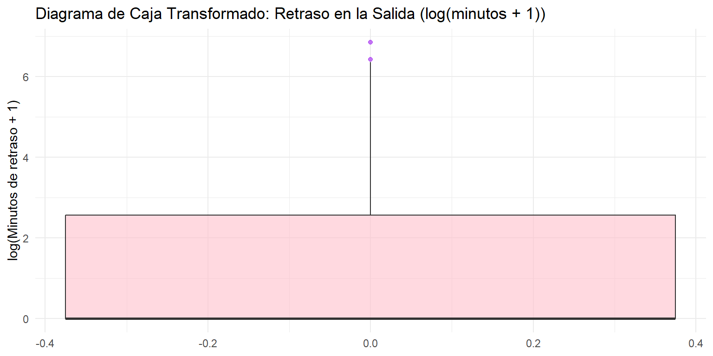
Con la escala logarítmica la dispersión de los datos queda estabilizada y el rango intercuartílico se expande visualmente, permitiendo distinguir la estructura de las demoras y evaluar con mayor claridad la separación entre los vuelos puntuales y aquellos con retrasos significativos.
Una vez evaluadas la integridad y las características de las variables operativas cuantitativas, pasamos al análisis univariante de la variable objetivo (satisfaction_v2) y de los factores demográficos de los pasajeros en la muestra de entrenamiento (train), sentando la base para los contrastes bivariantes con la satisfacción:
library(ggplot2)
library(scales)
# 1. Gráfico de la variable objetivo con frecuencias relativas y recuentos
p_target <- ggplot(train, aes(x = satisfaction_v2, fill = satisfaction_v2)) +
geom_bar(aes(y = after_stat(count) / sum(after_stat(count))), show.legend = FALSE, width = 0.55) +
geom_text(
aes(
y = after_stat(count) / sum(after_stat(count)),
label = paste0(after_stat(count), "\n(", percent(after_stat(count) / sum(after_stat(count)), accuracy = 0.1), ")")
),
stat = "count",
vjust = -0.3,
size = 4
) +
scale_y_continuous(labels = percent, limits = c(0, 0.68)) +
labs(
title = "Distribución de la Variable Objetivo en Train",
x = "Nivel de Satisfacción",
y = "Frecuencia Relativa"
) +
theme_minimal()
p_target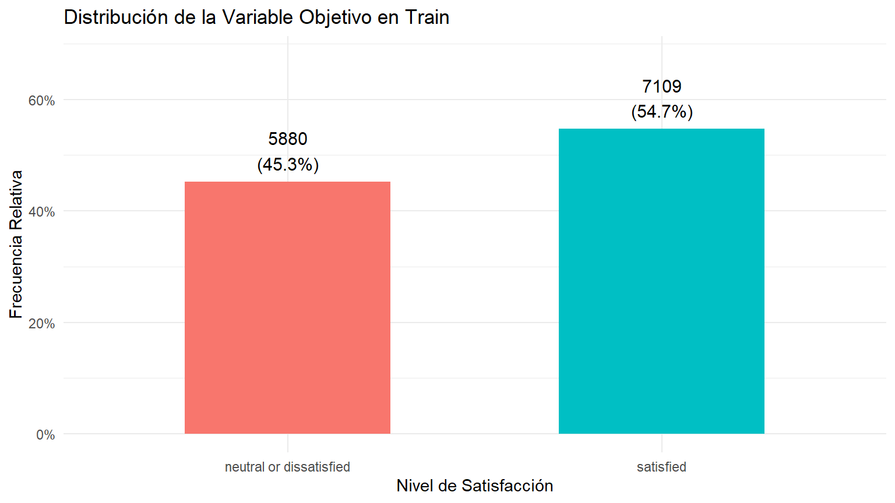
# 2. Distribución de la edad de los pasajeros (estilo temario con binwidth = 5)
p_edad <- ggplot(train, aes(x = age)) +
geom_histogram(binwidth = 5, fill = "cadetblue", color = "white") +
geom_vline(aes(xintercept = median(age)), color = "red", linetype = "dashed", linewidth = 1) +
labs(
title = "Distribución de la Edad de los Pasajeros",
subtitle = "La línea discontinua roja indica la mediana",
x = "Edad (años)",
y = "Frecuencia"
) +
theme_minimal()
p_edad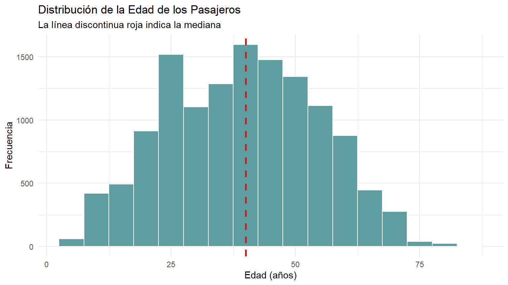
Interpretación y conclusiones del análisis univariante:
satisfaction_v2): La muestra de entrenamiento presenta una distribución bastante equilibrada, con un 54,7% de clientes satisfechos (7.109 encuestados) frente a un 45,3% de clientes neutrales o insatisfechos (5.880 encuestados). Al no existir un desbalanceo severo entre clases, no será necesario recurrir a técnicas de remuestreo (como sobremuestreo o submuestreo) en las etapas posteriores de modelado supervisado.age): La variable edad exhibe una distribución unimodal y aproximadamente simétrica, centrada en torno a los 40 años (mediana señalada por la línea discontinua roja) y con la mayor concentración de viajeros situada entre los 25 y los 55 años. Este rango abarca tanto perfiles de viajeros profesionales como de ocio familiar, lo que hace pertinente contrastar si la edad modula la exigencia y el nivel de satisfacción final con el servicio.Inspeccionamos la distribución de las variables categóricas que definen el perfil de los pasajeros y las condiciones de su viaje (gender, customer_type, type_of_travel y class):
library(patchwork)
# Gráfico para Clase
g_class <- ggplot(train, aes(x = class, fill = class)) +
geom_bar(aes(y = after_stat(count) / sum(after_stat(count))), show.legend = FALSE) +
scale_y_continuous(labels = percent) +
theme_minimal() +
labs(title = "Distribución por Clase", x = "Clase", y = "Proporción")
# Gráfico para Tipo de Viaje
g_travel <- ggplot(train, aes(x = type_of_travel, fill = type_of_travel)) +
geom_bar(aes(y = after_stat(count) / sum(after_stat(count))), show.legend = FALSE) +
scale_y_continuous(labels = percent) +
theme_minimal() +
labs(title = "Tipo de Viaje", x = "Propósito", y = "Proporción")
# Gráfico para Fidelidad
g_cust <- ggplot(train, aes(x = customer_type, fill = customer_type)) +
geom_bar(aes(y = after_stat(count) / sum(after_stat(count))), show.legend = FALSE) +
scale_y_continuous(labels = percent) +
theme_minimal() +
labs(title = "Fidelidad del Cliente", x = "Tipo de Cliente", y = "Proporción")
# Gráfico para Género
g_gender <- ggplot(train, aes(x = gender, fill = gender)) +
geom_bar(aes(y = after_stat(count) / sum(after_stat(count))), show.legend = FALSE) +
scale_y_continuous(labels = percent) +
theme_minimal() +
labs(title = "Género de los Pasajeros", x = "Género", y = "Proporción")
(g_class + g_travel) / (g_cust + g_gender)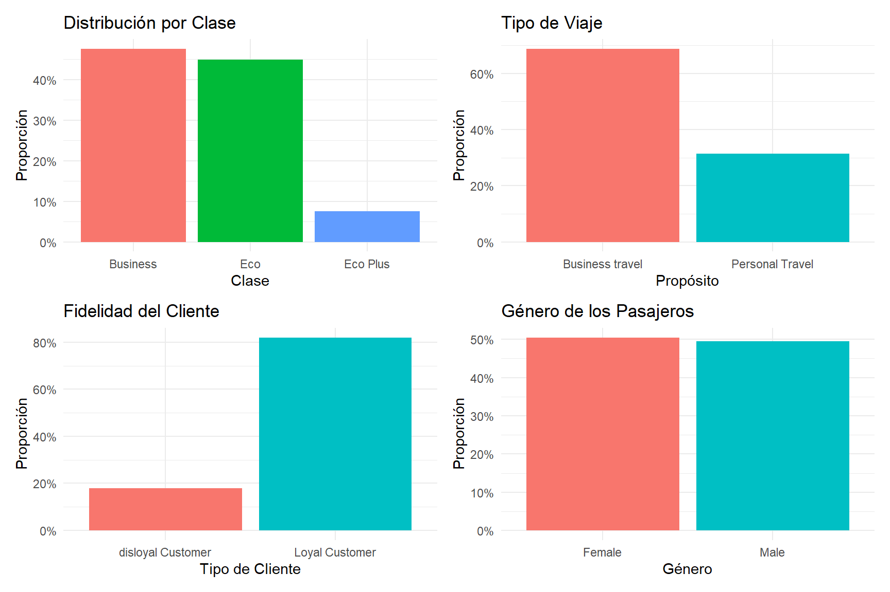
Conclusiones de la distribución categórica:
class): Existe una división equilibrada entre la clase Business (cerca del 48%) y la clase Eco (45%), mientras que Eco Plus representa una minoría residual (en torno al 7%).type_of_travel): Predominan notablemente los viajes de negocios (Business travel), que representan más del 68% de las observaciones, frente al viaje personal.customer_type): La gran mayoría de los encuestados son clientes fidelizados (Loyal Customer, >80%).gender): La paridad es casi perfecta entre hombres y mujeres (50%-50%), descartando sesgos demográficos de género en la recogida de encuestas.Para completar el análisis univariante, observamos cómo se reparten las respuestas en cada una de las 14 escalas de valoración (el 0 se muestra como categoría propia, ver 6.1.2):
train %>%
select(all_of(servicios)) %>%
pivot_longer(everything(), names_to = "servicio", values_to = "valor") %>%
count(servicio, valor) %>%
group_by(servicio) %>%
mutate(prop = n / sum(n)) %>%
ungroup() %>%
ggplot(aes(x = factor(valor, levels = 0:5), y = prop)) +
geom_col(fill = "cadetblue", width = 0.7) +
geom_text(aes(label = percent(prop, accuracy = 1)), vjust = -0.3, size = 2.5) +
facet_wrap(~ servicio, ncol = 3) +
scale_y_continuous(labels = percent, expand = expansion(mult = c(0, 0.18))) +
labs(title = "Distribución de las valoraciones por servicio",
x = "Valoración (0 = valor sin documentar)", y = "Proporción") +
theme_minimal()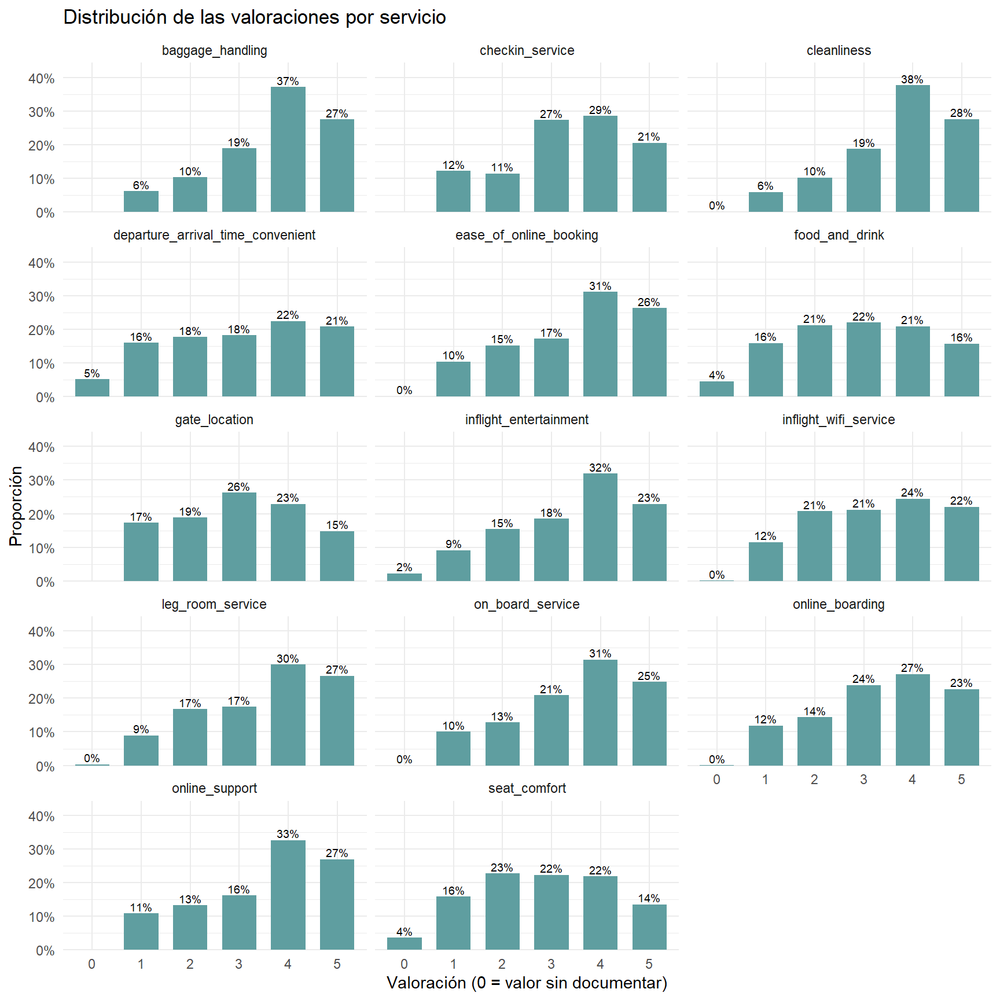
Conclusiones:
baggage_handling (64 %), cleanliness (66 %), online_support (60 %), ease_of_online_booking (57 %), leg_room_service (57 %), on_board_service (56 %) e inflight_entertainment (55 %).seat_comfort, food_and_drink, departure_arrival_time_convenient, gate_location e inflight_wifi_service reparten las respuestas de forma más homogénea entre las cinco categorías. En las cuatro primeras, además, entre un 15 % y un 17 % de los pasajeros dan la nota mínima (1).departure_arrival_time_convenient (5 %), food_and_drink (4 %), seat_comfort (4 %) e inflight_entertainment (2 %); en el resto es prácticamente inexistente o no aparece. Esto es coherente con la exclusión de estas cuatro variables en el MDS.Antes de contrastar cada pregunta de partida, comparamos todas las variables con una misma medida. Para cada variable contrastamos su distribución entre pasajeros satisfechos y no satisfechos con el test de Wilcoxon (suma de rangos). Como con este tamaño muestral casi todos los p-valores son prácticamente nulos, no sirven para ordenar las variables; usamos en su lugar el tamaño del efecto que se obtiene del propio estadístico \(W\):
\[AUC = \frac{W}{n_{satisfechos} \cdot n_{no\ satisfechos}}\]
El AUC es la probabilidad de que un pasajero satisfecho, elegido al azar, presente un valor mayor que uno no satisfecho (los empates cuentan la mitad). Vale 0,5 si no hay relación y se aleja de 0,5 cuanto más fuerte es la asociación, de modo que ordenamos por \(|AUC - 0{,}5|\). Como el test solo usa rangos, los retrasos no necesitan transformarse. Las variables binarias se codifican como 0/1, la clase como ordinal (Eco < Eco Plus < Business) y los ceros de las valoraciones se excluyen (ver 6.1.2.).
# AUC a partir del estadístico W de Wilcoxon
auc_wilcox <- function(x, y, positivo = "satisfied") {
ok <- !is.na(x)
xs <- x[ok & y == positivo]
xn <- x[ok & y != positivo]
w <- suppressWarnings(wilcox.test(xs, xn, exact = FALSE))
tibble(AUC = unname(w$statistic) / (length(xs) * length(xn)),
p_valor = w$p.value, n = sum(ok))
}
# Todas las variables en formato numérico
datos_w <- train %>%
transmute(
gender = as.numeric(gender == "Male"),
customer_type = as.numeric(customer_type == "Loyal Customer"),
type_of_travel = as.numeric(type_of_travel == "Business travel"),
class = as.numeric(factor(class, levels = c("Eco", "Eco Plus", "Business"))),
age, flight_distance,
departure_delay_in_minutes,
across(all_of(servicios), ~ na_if(., 0)) # los ceros se excluyen (ver 6.1.2)
)
ranking <- map_dfr(names(datos_w),
~ auc_wilcox(datos_w[[.x]], train$satisfaction_v2) %>%
mutate(variable = .x)) %>%
mutate(
efecto = abs(AUC - 0.5),
sentido = ifelse(AUC > 0.5, "+", "-"),
grupo = case_when(
variable %in% servicios ~ "Valoración de servicio",
variable == "departure_delay_in_minutes" ~ "Retrasos",
TRUE ~ "Perfil / viaje")
) %>%
arrange(desc(efecto))
kable(ranking %>% select(variable, grupo, AUC, efecto, sentido, p_valor),
digits = 3, caption = "Asociación de cada variable con la satisfacción (Wilcoxon, AUC)")| variable | grupo | AUC | efecto | sentido | p_valor |
|---|---|---|---|---|---|
| inflight_entertainment | Valoración de servicio | 0.840 | 0.340 | + | 0.000 |
| ease_of_online_booking | Valoración de servicio | 0.741 | 0.241 | + | 0.000 |
| online_support | Valoración de servicio | 0.722 | 0.222 | + | 0.000 |
| on_board_service | Valoración de servicio | 0.696 | 0.196 | + | 0.000 |
| seat_comfort | Valoración de servicio | 0.690 | 0.190 | + | 0.000 |
| online_boarding | Valoración de servicio | 0.687 | 0.187 | + | 0.000 |
| leg_room_service | Valoración de servicio | 0.679 | 0.179 | + | 0.000 |
| class | Perfil / viaje | 0.661 | 0.161 | + | 0.000 |
| baggage_handling | Valoración de servicio | 0.657 | 0.157 | + | 0.000 |
| cleanliness | Valoración de servicio | 0.656 | 0.156 | + | 0.000 |
| checkin_service | Valoración de servicio | 0.646 | 0.146 | + | 0.000 |
| inflight_wifi_service | Valoración de servicio | 0.624 | 0.124 | + | 0.000 |
| customer_type | Perfil / viaje | 0.611 | 0.111 | + | 0.000 |
| food_and_drink | Valoración de servicio | 0.607 | 0.107 | + | 0.000 |
| gender | Perfil / viaje | 0.395 | 0.105 | - | 0.000 |
| age | Perfil / viaje | 0.571 | 0.071 | + | 0.000 |
| type_of_travel | Perfil / viaje | 0.554 | 0.054 | + | 0.000 |
| departure_delay_in_minutes | Retrasos | 0.460 | 0.040 | - | 0.000 |
| flight_distance | Perfil / viaje | 0.471 | 0.029 | - | 0.000 |
| departure_arrival_time_convenient | Valoración de servicio | 0.486 | 0.014 | - | 0.005 |
| gate_location | Valoración de servicio | 0.493 | 0.007 | - | 0.187 |
ggplot(ranking, aes(x = reorder(variable, efecto), y = efecto, fill = grupo)) +
geom_col() +
geom_text(aes(label = round(AUC, 2)), hjust = -0.15, size = 3) +
coord_flip() +
scale_y_continuous(limits = c(0, max(ranking$efecto) * 1.15)) +
theme_minimal() +
labs(title = "Ranking de variables según su asociación con la satisfacción",
subtitle = "Etiqueta = AUC de Wilcoxon (0,5 = sin relación)",
x = NULL, y = "|AUC - 0,5|", fill = "")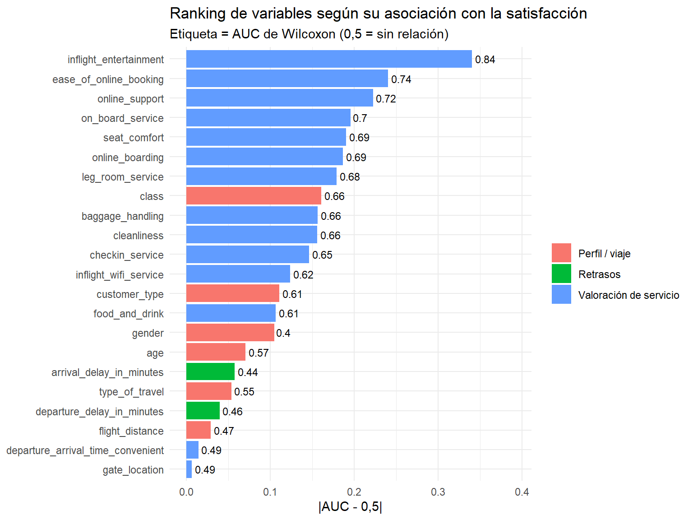
Interpretación del ranking: la variable más asociada con la satisfacción es inflight_entertainment (AUC = 0.84), seguida de ease_of_online_booking (0.74) y online_support (0.72). El retraso en la salida ocupa el puesto 18 de 21 (AUC = 0.46).
Limitaciones: el AUC mide la intensidad de una asociación monótona, no su causalidad; en las variables binarias el sentido depende de la codificación (un AUC menor que 0,5 en gender indica que el valor 1, Male, se asocia con menos satisfacción); la clase se trata como ordinal, lo que supone una relación monótona; y las valoraciones están correlacionadas entre sí (ver 6.4.1.), de modo que el ranking no separa el efecto individual de cada servicio.
Una vez caracterizadas las variables de forma individual, procedemos a realizar el análisis bivariante cruzando los factores explicativos con la satisfacción para contrastar las hipótesis planteadas inicialmente:
Contrastamos si un retraso operativo condiciona la insatisfacción más que la experiencia física del confort en cabina:
# Variable binaria para vuelos con demora notable (>15 min)
train <- train %>%
mutate(retraso_demora = factor(ifelse(departure_delay_in_minutes > 15,
"Con retraso (>15m)", "Puntual (<=15m)")))
# Gráfico 1: impacto del retraso
p_ret <- train %>%
count(retraso_demora, satisfaction_v2) %>%
group_by(retraso_demora) %>%
mutate(prop = n / sum(n)) %>%
ggplot(aes(x = retraso_demora, y = prop, fill = satisfaction_v2)) +
geom_col(position = position_dodge(width = 0.8), width = 0.7) +
geom_text(aes(label = percent(prop, accuracy = 1)),
position = position_dodge(width = 0.8), vjust = -0.4, size = 3.3) +
scale_y_continuous(labels = percent, breaks = seq(0, 1, 0.25), limits = c(0, 1.08)) +
theme_minimal() +
labs(title = "Satisfacción vs. Retraso", x = "",
y = "Porcentaje dentro de cada grupo", fill = "Satisfacción")
# Gráfico 2 y 3: confort en cabina (el 0 se mantiene como categoría "N/A", ver 6.1.2)
grafico_confort <- function(var, titulo) {
train %>%
mutate(valor = factor(.data[[var]], levels = 0:5,
labels = c("0", "1", "2", "3", "4", "5"))) %>%
count(valor, satisfaction_v2) %>%
group_by(valor) %>%
mutate(prop = n / sum(n)) %>%
ggplot(aes(x = valor, y = prop, fill = satisfaction_v2)) +
geom_col(position = position_dodge(width = 0.8), width = 0.7) +
geom_text(aes(label = percent(prop, accuracy = 1)),
position = position_dodge(width = 0.8), vjust = -0.4, size = 2.8) +
scale_y_continuous(labels = percent, breaks = seq(0, 1, 0.25), limits = c(0, 1.08)) +
theme_minimal() +
labs(title = titulo, x = "Calificación (0 = valor sin documentar)",
y = "Porcentaje dentro de cada grupo", fill = "Satisfacción")
}
p_seat <- grafico_confort("seat_comfort", "Satisfacción vs. Comodidad del asiento")
p_clean <- grafico_confort("cleanliness", "Satisfacción vs. Limpieza")
p_ret + p_seat + p_clean + plot_layout(guides = "collect")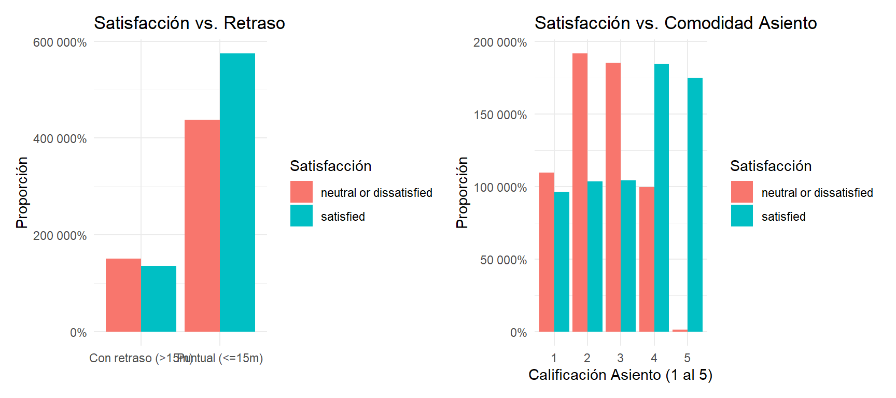
# Cifras exactas (% por fila)
cat("porcentaje de satisfaccion/insatisfaccion según el retraso del avión")porcentaje de satisfaccion/insatisfaccion según el retraso del aviónround(prop.table(table(train$retraso_demora, train$satisfaction_v2), 1) * 100, 1)
neutral or dissatisfied satisfied
Con retraso (>15m) 52.5 47.5
Puntual (<=15m) 43.2 56.8cat("\n")cat("porcentaje de satisfaccion/insatisfaccion según la comodidad del asiento")porcentaje de satisfaccion/insatisfaccion según la comodidad del asientoround(prop.table(table(train$seat_comfort, train$satisfaction_v2), 1) * 100, 1)
neutral or dissatisfied satisfied
0 0.4 99.6
1 53.2 46.8
2 64.9 35.1
3 64.1 35.9
4 35.0 65.0
5 0.9 99.1cat("\n")cat("porcentaje de satisfaccion/insatisfaccion según la limpieza del avión" )porcentaje de satisfaccion/insatisfaccion según la limpieza del aviónround(prop.table(table(train$cleanliness, train$satisfaction_v2), 1) * 100, 1)
neutral or dissatisfied satisfied
0 100.0 0.0
1 58.6 41.4
2 59.2 40.8
3 68.0 32.0
4 41.6 58.4
5 26.8 73.2Hallazgos de la P1:
Retraso vs. satisfacción: los vuelos con retraso de más de 15 minutos tienen un 52,5 % de pasajeros neutrales o insatisfechos, frente al 43,2 % de los vuelos puntuales. El retraso eleva la insatisfacción unos 9,3 puntos porcentuales. Es decir, el retraso afecta, pero moderadamente. Incluso con retraso, casi la mitad de los pasajeros siguen satisfechos.
Comodidad del asiento vs. satisfacción: con notas de 2 y 3, en torno al 65 % de los pasajeros no está satisfecho; con un 4 el 65,0 % sí lo está, y con un 5 lo está el 99,1 %. El salto entre el 3 (35,9 % de satisfechos) y el 5 es enorme. La categoría con valor 0 tiene un 99,6 % de satisfechos, un comportamiento parecido al de la nota 5 y no al de la mínima satisfacción, lo que refuerza lo visto en 6.1.2.
Limpieza vs. satisfacción: con notas de 1 a 3 la satisfacción queda entre el 32,0 % y el 41,4 %, y con un 4 o un 5 sube al 58,4 % y al 73,2 %. Sin embargo, aun con la nota máxima, el 26,8 % de los pasajeros no está satisfecho, frente al 0,9 % en el asiento. La limpieza se asocia con la satisfacción, pero bastante menos que la comodidad del asiento.
En conclusión, el confort en cabina condiciona la satisfacción más que la puntualidad y la limpieza. Aunque el retraso del vuelo tiene un efecto importante en la insatisfacción del cliente.
Evaluamos conjuntamente el impacto del propósito del vuelo (type_of_travel) y la cabina contratada (class) sobre la satisfacción global mediante barras normalizadas al 100%:
# Tabla de contingencia en porcentajes
round(prop.table(table(train$class, train$satisfaction_v2), margin = 1) * 100, 1)
neutral or dissatisfied satisfied
Business 28.9 71.1
Eco 60.9 39.1
Eco Plus 55.3 44.7# Tamaño de cada grupo
train %>% count(type_of_travel, class) %>% kable(caption = "Número de pasajeros por grupo")| type_of_travel | class | n |
|---|---|---|
| Business travel | Business | 5909 |
| Business travel | Eco | 2489 |
| Business travel | Eco Plus | 521 |
| Personal Travel | Business | 267 |
| Personal Travel | Eco | 3339 |
| Personal Travel | Eco Plus | 464 |
# Gráfico de barras lado a lado (% dentro de cada grupo), facetado por tipo de viaje
train %>%
count(type_of_travel, class, satisfaction_v2) %>%
group_by(type_of_travel, class) %>%
mutate(prop = n / sum(n),
etiqueta = paste0(round(prop * 100), "%")) %>%
ggplot(aes(x = class, y = prop, fill = satisfaction_v2)) +
geom_col(position = position_dodge(width = 0.8), width = 0.7) +
geom_text(aes(label = etiqueta),
position = position_dodge(width = 0.8), vjust = -0.4, size = 3.3) +
facet_wrap(~ type_of_travel) +
scale_y_continuous(labels = percent, breaks = seq(0, 1, 0.25), limits = c(0, 1.08)) +
theme_minimal() +
labs(
title = "Nivel de Satisfacción según Clase y Tipo de Viaje",
x = "Clase de Cabina",
y = "Porcentaje dentro de cada grupo",
fill = "Satisfacción"
)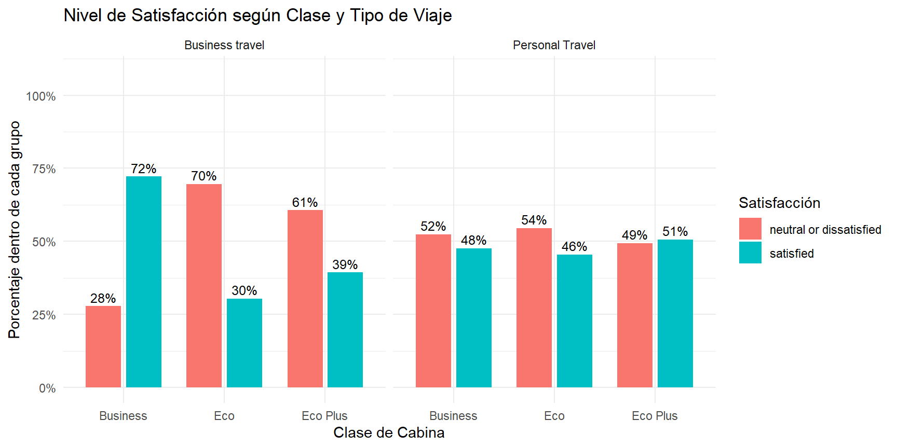
Hallazgos de la P2:
Al segmentar la satisfacción conjuntamente por el propósito del vuelo y la clase de cabina, se aprecian dos comportamientos claramente diferenciados:
Business travel): La clase de cabina resulta determinante en la experiencia. En clase Business, aproximadamente el 72% de los viajeros manifiesta estar satisfecho. En contraste, cuando viajan por trabajo en cabinas turista (Eco o Eco Plus), la satisfaccción desciende a entre el 30% y el 40%.Personal Travel): La satisfacción es similar en las tres cabinas (46-51 %). Aquí es donde nos surge la pregunta 5, de si este promedio oculta una fuerte diferencia entre géneros.En conclusión, la exigencia y sensibilidad hacia la categoría de cabina dependen del motivo de vuelo: mientras que para el cliente corporativo volar en turista es un motivo de insatisfacción, el viajero personal muestra una percepción dividida e independiente de la clase contratada.
library(knitr)
# 1. Realizamos el test de Chi-cuadrado
res_chi <- chisq.test(table(train$class, train$satisfaction_v2))
# 2. Creamos la tabla resumen con los resultados
tabla_resultado_chi <- data.frame(
"Test Estadístico" = "Chi-cuadrado de Pearson",
"X-squared" = round(res_chi$statistic, 2),
"Grados de libertad" = res_chi$parameter,
"p-valor" = format.pval(res_chi$p.value, digits = 4, eps = 2.2e-16)
)
# 3. Imprimimos la tabla especificando align = c("l", "c", "c", "c") para centrar las columnas numéricas
kable(
tabla_resultado_chi,
caption = "Resultado del contraste de Chi-cuadrado para la dependencia entre variables",
align = c("l", "c", "c", "c")
)| Test.Estadístico | X.squared | Grados.de.libertad | p.valor | |
|---|---|---|---|---|
| X-squared | Chi-cuadrado de Pearson | 1286.22 | 2 | < 2.2e-16 |
Dado que el test de Chi-cuadrado nos da un p-valor inferior a 0.05, se rechaza la hipótesis nula de independencia, confirmando que existe una asociación estadísticamente significativa entre la clase y el nivel de satisfacción de los clientes
Para cuantificar la incertidumbre de cada grupo (los grupos pequeños, como Eco Plus en viaje personal, estimarán la proporción con menos precisión), aplicamos el test binomial a cada combinación de tipo de viaje y clase. En cada una obtenemos la proporción de satisfechos, su intervalo de confianza al 95 % y el contraste de la hipótesis nula de que la proporción coincide con la tasa global de satisfacción de train.
p0 <- mean(train$satisfaction_v2 == "satisfied") # tasa global de satisfacción
binom_por_grupo <- function(datos, ...) {
datos %>%
group_by(...) %>%
summarise(n = n(), satisfechos = sum(satisfaction_v2 == "satisfied"),
.groups = "drop") %>%
mutate(
prop = satisfechos / n,
ic_inf = map2_dbl(satisfechos, n, ~ binom.test(.x, .y, p = p0)$conf.int[1]),
ic_sup = map2_dbl(satisfechos, n, ~ binom.test(.x, .y, p = p0)$conf.int[2]),
p_valor = map2_dbl(satisfechos, n, ~ binom.test(.x, .y, p = p0)$p.value)
)
}
kable(binom_por_grupo(train, type_of_travel, class), digits = 3,
caption = "Satisfacción por tipo de viaje y clase (H0: proporción = tasa global)")| type_of_travel | class | n | satisfechos | prop | ic_inf | ic_sup | p_valor |
|---|---|---|---|---|---|---|---|
| Business travel | Business | 5909 | 4265 | 0.722 | 0.710 | 0.733 | 0.000 |
| Business travel | Eco | 2489 | 757 | 0.304 | 0.286 | 0.323 | 0.000 |
| Business travel | Eco Plus | 521 | 205 | 0.393 | 0.351 | 0.437 | 0.000 |
| Personal Travel | Business | 267 | 127 | 0.476 | 0.414 | 0.537 | 0.019 |
| Personal Travel | Eco | 3339 | 1520 | 0.455 | 0.438 | 0.472 | 0.000 |
| Personal Travel | Eco Plus | 464 | 235 | 0.506 | 0.460 | 0.553 | 0.084 |
Queremos saber con qué servicios tecnológicos (inflight_wifi_service, online_boarding, online_support) se asocia más la lealtad del cliente. Para cada uno comparamos las valoraciones de clientes leales y desleales con el mismo estadístico que en el ranking: el AUC de Wilcoxon, aquí interpretado como la probabilidad de que un cliente leal, elegido al azar, valore el servicio más alto que uno desleal (0,5 = sin relación).
servicios_tec <- c("inflight_wifi_service", "online_boarding", "online_support")
p3_datos <- train %>%
select(customer_type, all_of(servicios_tec)) %>%
mutate(across(all_of(servicios_tec), ~ na_if(., 0))) # los ceros no son una puntuación (ver 6.1.2)
# AUC de cada servicio respecto a la lealtad
p3_auc <- map_dfr(servicios_tec,
~ auc_wilcox(p3_datos[[.x]], p3_datos$customer_type,
positivo = "Loyal Customer") %>%
mutate(servicio = .x)) %>%
mutate(efecto = abs(AUC - 0.5))
# Medias por tipo de cliente
p3_medias <- p3_datos %>%
pivot_longer(-customer_type, names_to = "servicio", values_to = "valor") %>%
group_by(servicio, customer_type) %>%
summarise(media = mean(valor, na.rm = TRUE), .groups = "drop")
# Tabla resumen
p3_tabla <- p3_medias %>%
pivot_wider(names_from = customer_type, values_from = media) %>%
left_join(p3_auc %>% select(servicio, AUC, efecto, p_valor), by = "servicio") %>%
arrange(desc(efecto))
p3_tabla <- p3_tabla %>%
mutate(p_valor = format.pval(p_valor, digits = 2, eps = 0.001))
kable(p3_tabla, digits = 3,
caption = "Valoración media por tipo de cliente y asociación con la lealtad (AUC de Wilcoxon)")| servicio | disloyal Customer | Loyal Customer | AUC | efecto | p_valor |
|---|---|---|---|---|---|
| online_support | 2.994 | 3.629 | 0.627 | 0.127 | <0.001 |
| online_boarding | 3.013 | 3.418 | 0.582 | 0.082 | <0.001 |
| inflight_wifi_service | 3.007 | 3.300 | 0.559 | 0.059 | <0.001 |
# Gráfico: medias por tipo de cliente
ggplot(p3_medias, aes(x = servicio, y = media, fill = customer_type)) +
geom_col(position = position_dodge(width = 0.8), width = 0.7) +
geom_text(aes(label = round(media, 2)),
position = position_dodge(width = 0.8), vjust = -0.5, size = 3.5) +
scale_y_continuous(limits = c(0, 5)) +
scale_fill_manual(values = c("disloyal Customer" = "#F8766D",
"Loyal Customer" = "#00BFC4")) +
theme_minimal() +
labs(title = "Valoración media de los servicios digitales según fidelidad",
x = NULL,
y = "Puntuación media (escala 0 a 5)",
fill = "Tipo de cliente")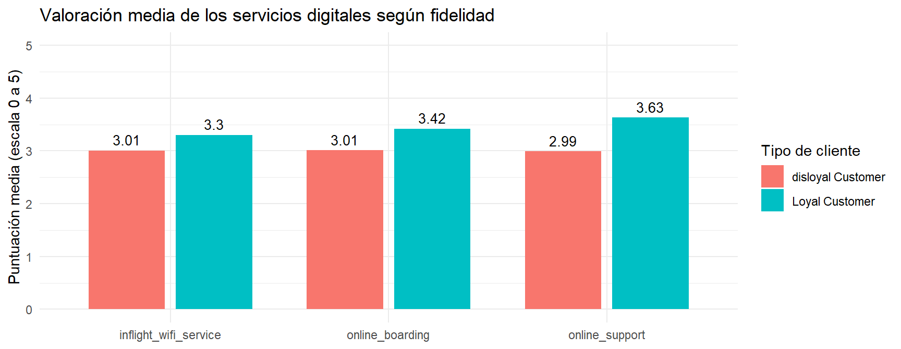
Hallazgos de la P3:
Los clientes fieles suelen dar una mejor valoración a los servicios tecnológicos, siendo el soporte online el que mejor valoración tiene con una media de \(3.63\) estrellas.
Los clientes no leales a la compañía dan valoraciones medias a los servicios, siendo estos bastante similares y centrandose en las tres estrellas.
En este apartado se busca entender qué rango de edad presenta una mayor satisfacción con la aerolínea.
Como age toma valores enteros en un rango amplio, la agrupamos en cuatro tramos (0-25, 26-40, 41-60 y más de 60 años) para facilitar la lectura:
# Creamos el rango de edad
train_edad <- train %>%
mutate(rango_edad = cut(
age,
breaks = c(0, 25, 40, 60, 100),
labels = c("0-25 años", "26-40 años", "41-60 años", "> 60 años"),
include.lowest = TRUE
))
# Tabla de contingencia de satisfacción por rango de edad (% por fila)
p4_tabla <- round(prop.table(table(train_edad$rango_edad, train_edad$satisfaction_v2), margin = 1) * 100, 1)
p4_tabla
neutral or dissatisfied satisfied
0-25 años 55.0 45.0
26-40 años 50.7 49.3
41-60 años 33.5 66.5
> 60 años 58.4 41.6# Gráfico: % de cada nivel de satisfacción DENTRO de cada rango de edad
train_edad %>%
count(rango_edad, satisfaction_v2) %>%
group_by(rango_edad) %>%
mutate(prop = n / sum(n)) %>%
ggplot(aes(x = rango_edad, y = prop, fill = satisfaction_v2)) +
geom_col(position = position_dodge(width = 0.8), width = 0.7) +
geom_text(aes(label = percent(prop, accuracy = 1)),
position = position_dodge(width = 0.8), vjust = -0.4, size = 3.3) +
scale_y_continuous(labels = percent, breaks = seq(0, 1, 0.25), limits = c(0, 1.08)) +
theme_minimal() +
labs(
title = "Nivel de satisfacción según el rango de edad del pasajero",
x = "Rango de edad",
y = "Porcentaje dentro de cada rango",
fill = "Satisfacción"
)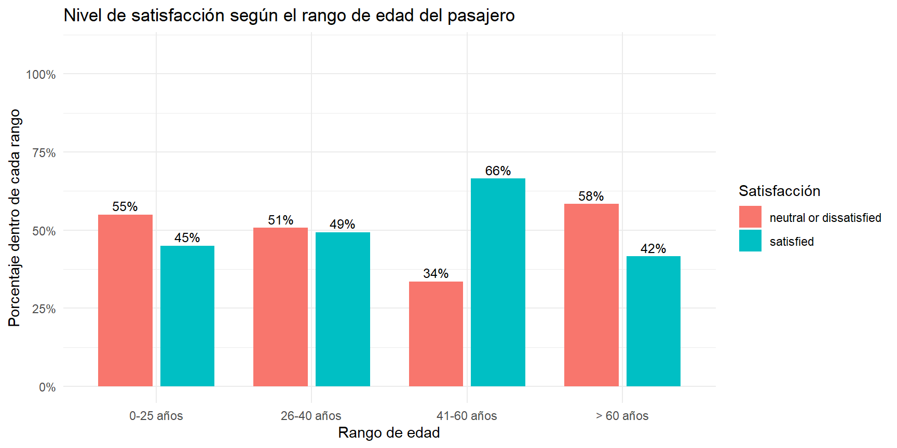
Para valorar la precisión de cada tasa, aplicamos de nuevo el test binomial (proporción de satisfechos de cada rango, con su intervalo de confianza al 95 % y el contraste frente a la tasa global):
kable(binom_por_grupo(train_edad, rango_edad), digits = 3,
caption = "Satisfacción por rango de edad (H0: proporción = tasa global)")| rango_edad | n | satisfechos | prop | ic_inf | ic_sup | p_valor |
|---|---|---|---|---|---|---|
| 0-25 años | 2817 | 1269 | 0.450 | 0.432 | 0.469 | 0 |
| 26-40 años | 3915 | 1930 | 0.493 | 0.477 | 0.509 | 0 |
| 41-60 años | 5250 | 3491 | 0.665 | 0.652 | 0.678 | 0 |
| > 60 años | 1007 | 419 | 0.416 | 0.385 | 0.447 | 0 |
Hallazgos de la P4:
tab <- train %>%
group_by(type_of_travel, gender) %>%
summarise(n = n(), pct_sat = mean(satisfaction_v2 == "satisfied") * 100, .groups = "drop")
kable(tab, digits = 1, caption = "% de satisfechos por tipo de viaje y género")| type_of_travel | gender | n | pct_sat |
|---|---|---|---|
| Business travel | Female | 4545 | 56.9 |
| Business travel | Male | 4374 | 60.3 |
| Personal Travel | Female | 2015 | 83.2 |
| Personal Travel | Male | 2055 | 10.0 |
ggplot(tab, aes(type_of_travel, pct_sat / 100, fill = gender)) +
geom_col(position = "dodge", width = 0.6) +
scale_y_continuous(labels = scales::percent) +
labs(x = "Tipo de viaje", y = "% satisfechos", fill = "Género") +
theme_minimal()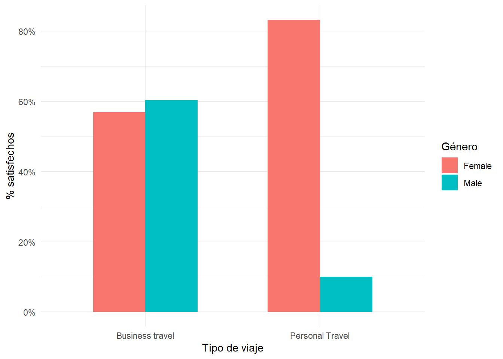
# ¿Se reparte igual la clase entre hombres y mujeres? (% por fila)
round(prop.table(table(train$gender, train$class), 1) * 100, 1)
Business Eco Eco Plus
Female 47.4 44.5 8.2
Male 47.7 45.3 7.0# ¿Es una interacción real?
train$sat <- as.integer(train$satisfaction_v2 == "satisfied")
anova(glm(sat ~ gender + type_of_travel + class, binomial, train),
glm(sat ~ gender * type_of_travel + class, binomial, train), test = "Chisq")Hallazgos de la P5:
Al analizar conjuntamente el género del pasajero (gender) y el motivo del viaje (type_of_travel) respecto a la variable objetivo, se observa una clara interacción entre ambas características que condiciona la experiencia del usuario:
En conclusión, el género no actúa de forma aislada sobre la satisfacción, sino que su impacto depende totalmente del tipo de viaje. Mientras que el perfil corporativo mantiene estándares de satisfacción estables con independencia del sexo, el segmento de viajes personales revela una brecha crítica entre hombres y mujeres que resultará altamente discriminante para la fase de modelado predictivo.
Observación: un patrón tan extremo (83 % frente a 10 % en viaje personal) y que desaparece por completo en viaje de negocios resulta poco habitual en datos reales de encuesta. Junto con lo observado en los ceros (apartado 6.1.2), puede indicar que el conjunto de datos ha sido generado o manipulado. Dado que no conocemos su procedencia exacta, tratamos este resultado como una asociación descriptiva, sin garantía de que se reproduzca en pasajeros reales.
Para ver qué variables varían de forma conjunta y cuáles aportan información redundante, calculamos la matriz de correlaciones lineales de Pearson (ya usada en 6.1.3.1.) entre las 14 valoraciones de servicio, la edad, la distancia y los retrasos. Los ceros de las valoraciones se tratan como valores ausentes (ver 6.1.2.) y los retrasos se transforman con \(\log(x+1)\), como en 6.1.3..
mat <- train %>%
transmute(across(all_of(servicios), ~ na_if(., 0)),
age, flight_distance,
log_ret_salida = log1p(departure_delay_in_minutes))
cor_p <- cor(mat, use = "pairwise.complete.obs", method = "pearson")
# Parejas más correlacionadas
pares <- as.data.frame(cor_p) %>%
rownames_to_column("v1") %>%
pivot_longer(-v1, names_to = "v2", values_to = "r") %>%
filter(v1 < v2) %>%
arrange(desc(abs(r)))
kable(head(pares, 8), digits = 2, caption = "Pares de variables más correlacionados (Pearson)")| v1 | v2 | r |
|---|---|---|
| ease_of_online_booking | online_boarding | 0.69 |
| online_boarding | online_support | 0.68 |
| food_and_drink | seat_comfort | 0.67 |
| inflight_wifi_service | online_boarding | 0.64 |
| baggage_handling | cleanliness | 0.63 |
| ease_of_online_booking | online_support | 0.62 |
| departure_arrival_time_convenient | gate_location | 0.62 |
| departure_arrival_time_convenient | food_and_drink | 0.61 |
# Mapa de calor con las variables ordenadas por similitud
niveles <- rownames(cor_p)[hclust(as.dist(1 - cor_p))$order]
as.data.frame(cor_p) %>%
rownames_to_column("v1") %>%
pivot_longer(-v1, names_to = "v2", values_to = "r") %>%
mutate(
v1 = factor(v1, levels = niveles),
v2 = factor(v2, levels = niveles)
) %>%
filter(as.numeric(v1) >= as.numeric(v2)) %>%
ggplot(aes(v1, v2, fill = r)) +
geom_tile(color = "white") +
geom_text(aes(label = round(r, 2)), size = 2.3) +
scale_fill_gradient2(
low = "#b2182b",
mid = "white",
high = "#2166ac",
limits = c(-1, 1)
) +
theme_minimal() +
theme(
axis.text.x = element_text(angle = 45, hjust = 1),
panel.grid = element_blank()
) +
labs(title = "Correlaciones de Pearson", x = NULL, y = NULL, fill = "r")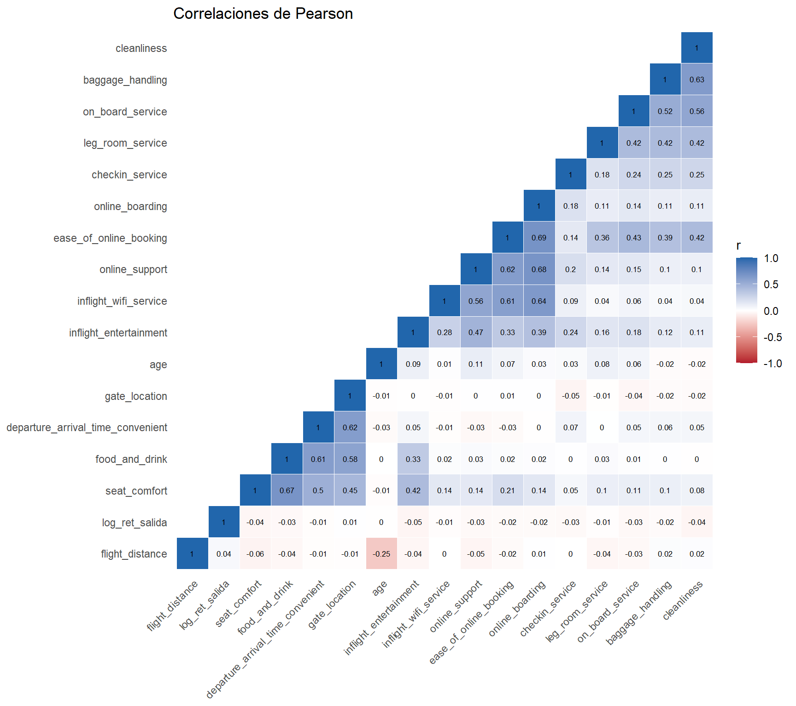
La pareja más correlacionada es ease_of_online_booking y online_boarding (r = 0.69). Las correlaciones entre servicios indican que las valoraciones no son independientes entre sí, es decir, si el vuelo les resulta cómodo, suelen puntuar alto en la mayoría de los apartados de cabina. Esto explica que, en el siguiente apartado, la primera coordenada del MDS (6.4.2.) funcione como una valoración global.
Sin embargo, podemos observar que las correlaciones entre los servicios (como la comodidad del asiento o la limpieza) y variables como la edad, la distancia de vuelo o los retrasos, son prácticamente nulas. Esto significa que un pasajero joven o mayor, o alguien que haya sufrido un retraso, no puntúa de manera distinta los servicios por el mero hecho de pertenecer a un rango de edad o volar más lejos; son dimensiones independientes en la percepción del cliente.
Ahora aplicamos Metric MDS (Multidimensional Scaling) a partir de la matriz de distancias euclídeas de las 10 valoraciones de servicio sin ceros informativos (se excluyen asiento, comida, entretenimiento y horario conveniente por lo observado en 6.1.2.)
Dado que el cálculo de los autovectores sobre la matriz de distancias \((≈12.939 × 12.939)\) presenta un coste computacional cúbico no viable en memoria local (lo hemos intentado y a los 5 minutos seguía sin renderizar el qmd), extraemos una submuestra representativa y reproducible de 400 observaciones (set.seed(6004)) para proyectar la configuración espacial de los pasajeros:
# 1. Excluimos las 4 variables mencionadas en el 6.1.2., cuyos 0 podian implicar satisfaccion
servicios_mds <- setdiff(servicios, c("seat_comfort", "food_and_drink",
"inflight_entertainment",
"departure_arrival_time_convenient"))
# 2. Los pocos ceros que quedan los tratamos como NA y se descartan esas filas
train_mds <- train %>% mutate(across(all_of(servicios_mds), ~ na_if(., 0)))
completos <- complete.cases(train_mds[, servicios_mds])
mean(completos) # proporción de pasajeros que se conservan (debería ser ≈ 0.99)[1] 0.9961506servicios_scaled <- scale(train_mds[completos, servicios_mds])
target_completo <- train_mds$satisfaction_v2[completos]
# 3. Submuestra reproducible de 400 pasajeros
set.seed(6004)
idx_mds <- sample(nrow(servicios_scaled), 400)
sub_scaled <- servicios_scaled[idx_mds, ]
sub_target <- target_completo[idx_mds]
# 4. Distancias euclídeas y MDS métrico (eig = TRUE para medir la calidad del ajuste)
d_mat <- dist(sub_scaled, method = "euclidean")
mds_res <- cmdscale(d_mat, k = 2, eig = TRUE)
mds_res$GOF # bondad de ajuste: cuánta variabilidad recogen las 2 dimensiones[1] 0.5775852 0.5775852# 5. Dataframe para graficar
df_mds <- data.frame(
Coordinate_1 = mds_res$points[, 1],
Coordinate_2 = mds_res$points[, 2],
Satisfaction = sub_target
)
# 6. Gráfico
ggplot(df_mds, aes(x = Coordinate_1, y = Coordinate_2, color = Satisfaction)) +
geom_point(size = 2, alpha = 0.85) +
theme_minimal() +
labs(title = "MDS métrico de 10 valoraciones de servicio",
x = "Coordenada 1", y = "Coordenada 2", color = "Satisfacción")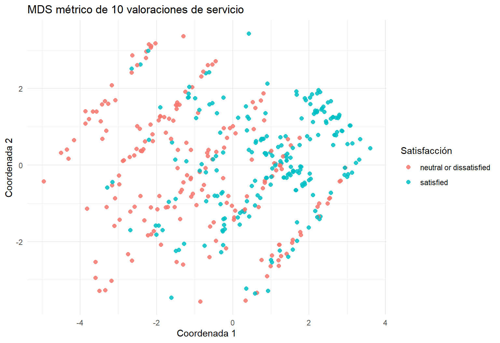
# Correlación de cada coordenada con cada servicio (en la submuestra)
cor_ejes <- cor(sub_scaled, mds_res$points[, 1:2]) %>%
as.data.frame() %>%
rename(Coord_1 = V1, Coord_2 = V2) %>%
tibble::rownames_to_column("servicio") %>%
arrange(desc(abs(Coord_1)))
kable(cor_ejes, digits = 2,
caption = "Correlación de cada coordenada con las valoraciones de servicio")| servicio | Coord_1 | Coord_2 |
|---|---|---|
| ease_of_online_booking | 0.89 | -0.22 |
| online_boarding | 0.73 | -0.52 |
| online_support | 0.73 | -0.46 |
| cleanliness | 0.64 | 0.50 |
| inflight_wifi_service | 0.62 | -0.61 |
| baggage_handling | 0.56 | 0.61 |
| on_board_service | 0.55 | 0.55 |
| leg_room_service | 0.49 | 0.51 |
| checkin_service | 0.42 | 0.19 |
| gate_location | -0.03 | 0.00 |
# Y con la valoración media global de cada pasajero
cor_media <- cor(rowMeans(sub_scaled), mds_res$points[, 1:2])
colnames(cor_media) <- c("Coordenada 1", "Coordenada 2")
rownames(cor_media) <- "Valoración media global"
kable(cor_media, digits = 2, caption = "Correlación de las coordenadas con la nota media de cada pasajero")| Coordenada 1 | Coordenada 2 | |
|---|---|---|
| Valoración media global | 0.98 | 0.1 |
Interpretación y conclusiones de la Matriz MDS:
Calidad del ajuste: como se observa en la segunda línea de código que se ha impreso por pantalla de esta sección, las dos primeras coordenadas recogen un 57,8 % de la variabilidad de las distancias entre pasajeros (GOF = 0,58). Esto es un resumen visual bastante acercado a la realidad, aunque hay un 42% de matrices que no salen representadas.
Coordenada 1 (valoración global): para saber qué representaba, hemos calculado su correlación con la nota media de cada pasajero y ha dado \(r=0,98\), es decir, casi 1. Eso significa que el eje horizontal ordena a los pasajeros según lo contentos que están en general con los servicios. La única excepción es la ubicación de la puerta (r ≈ 0), que no se relaciona con ninguno de los dos ejes, porque la gente la puntúa de forma independiente a cómo haya ido el resto del vuelo.
Relación con la satisfacción: a lo largo de la coordenada 1 los pasajeros insatisfechos o neutrales se concentran a la izquierda y los satisfechos a la derecha, pero en el centro se mezclan ambos colores (solapamiento) y abajo a la derecha hay algunos insatisfechos. Esto demuestra que sacar una buena media en esos 10 servicios ayuda mucho a estar satisfecho, pero no lo garantiza al 100 % (hay que tener en cuenta que faltan factores clave fuera de esos 10 ítems, como la comodidad del asiento, el entretenimiento o el tipo de viaje).
Coordenada 2 (perfil digital vs. presencial): aquí hicimos lo mismo que con la coordenada 1, pero los resultados fueron distintos (\(r=0,10\)). Al mirar la tabla de correlaciones con los servicios, se ve que algunas tienen signo negativo y otras positivo. Si nos fijamos, los que son negativos son los relacionados con lo “online”, y los que son positivos son los servicios presenciales o físicos en cabina. Es decir, si un pasajero ha valorado bien la parte tecnológica/online frente al resto, se situará muy abajo del gráfico, mientras que si da mayor nota a lo presencial, aparecerá por arriba. Tanto arriba como abajo hay puntos de ambos colores, es decir, tener un perfil u otro no hace que estés más o menos satisfecho globalmente.
Limitaciones:
Este análisis exploratorio de los datos que nos ha permitido comprender mejor la estructura de la muestra que nos servirá para poder realizar un modelo predictivo que nos indique si un pasajero estará satisfecho o insatisfecho con su futuro vuelo.
Las principales conclusiones a las que hemos llegado son: - Redundancia en las variables: La variable arrival_delay_in_minutes aporta la misma información que la variable departure_delay_in_minutes, por lo que decidimos eliminarla. -Comodidad y retrasos: Las variables seat_confort y cleanliness son muy influyentes en la satisfacción de los clientes. -Edad y genero: Las mujeres suelen presentar mayores porcentajes de satisfacción con respecto a los hombres. Además, las personas más jovenes y de edad más avanzada suelen presentar un comportamiento más critico a la hora de valorar los servicios del avión. -Fidelidad: Los clientes fieles suelen presentar unos mayores niveles de satisfaccion con respecto a aquellos que no suelen usar tanto la aerilinea, dandole principla importancia al soporte online.
Para este trabajo se ha usado la inteligencia artificial como medio de apoyo en la elaboración de código y creación de gráficos, usandolo principalmente como herramienta de corrección y deputación de errores, además de servir como guía para aprender la sintaxis de R.